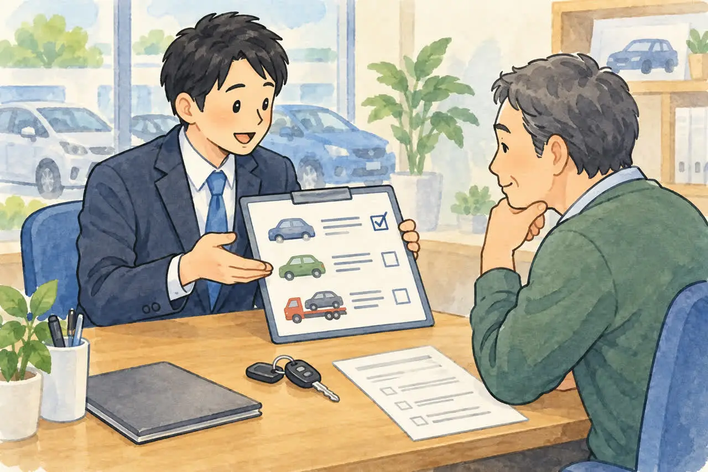
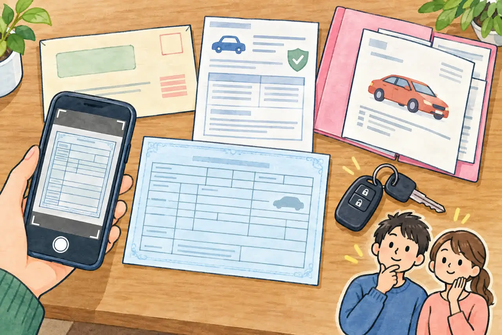
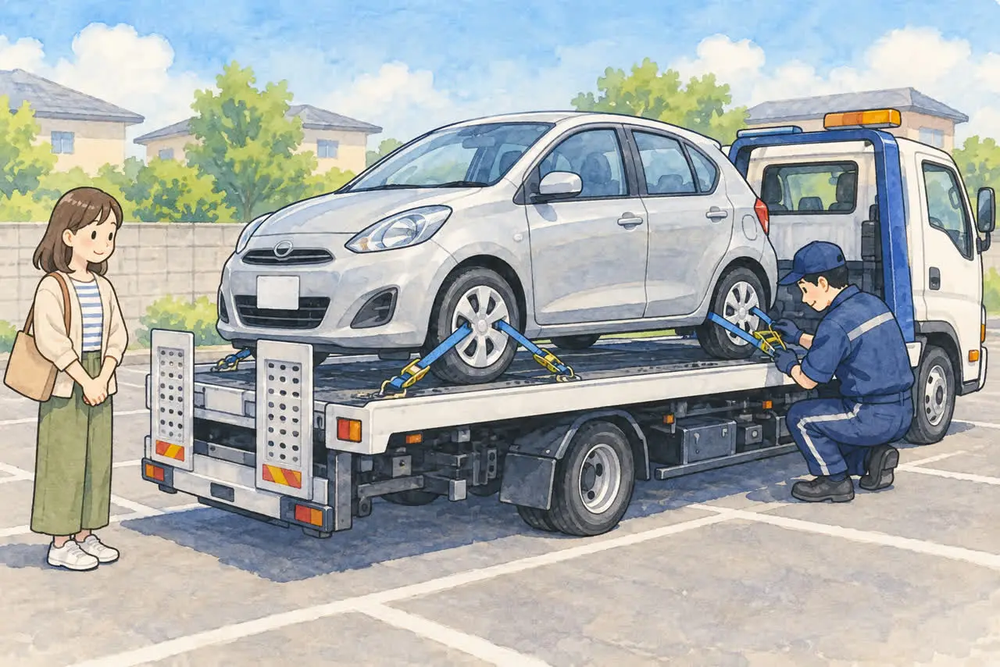

車検証が見つからない方へ
車検証をなくしたけど廃車できる？
再交付に行く前に知っておきたいこと
公開｜更新
こんにちは、東京都足立区江北で自動車解体・廃車買取をしている「大崎商店 環七店」です。
「車を手放そうと思ったら、車検証が見当たらない」
そんなとき、再交付の窓口へ行く前に、廃車の依頼先にご相談ください。
この記事の要点
- 車検証をなくしても、廃車はできます。
- 廃車の手続きは、車検証の再交付をせずに進められる場合があります。 普通車と軽自動車で進め方が異なります。
- 見つからなければ、再交付の窓口へ行く前に、車の種類と名義を依頼先にお伝えください。
① まず、探してみましょう

見つからないときは、次の場所を見てください。
- ダッシュボードの中（グローブボックス）：いちばん多い保管場所です
- ドアポケット、サンバイザーの裏
- 自賠責保険証明書と一緒にしまってある場所：同じ入れ物に入っていることが多いです
- ご自宅の引き出しや書類入れ：車検のあと、家に持ち帰ってしまうことがあります
- ご家族が持っている：親御さんや配偶者の方が保管していることもあります
小さくて薄い電子車検証は、ほかの書類に紛れることがあります。「自動車検査証記録事項」という紙があれば、名義などを確認する際の参考になります。
② 廃車なら、再交付しなくてよいことが多い

まず、どの手続きで進めるかを依頼先に確認しましょう。
- 普通車。一時抹消（いったん登録を止める手続き）や、解体後の永久抹消では、車検証を返せない理由を書いた理由書で進められます。
- 軽自動車。自家用で名義や住所に変更がなければ、窓口に紛失を伝えて廃車手続きを進められます。名義・住所などが変わった場合や事業用の車は、必要書類を事前に確認してください。
登録を残して引き続き運転する場合や、名義変更だけを行う場合は、車検証の再交付が必要です。廃車とあわせて名義を変更する場合は、再交付の要否を依頼先に確認してください。
③ 手元にあると助かるもの

車検証がなくても、次のものがあれば、お電話での相談がスムーズです。すべてなくても、分かる範囲で大丈夫です。
- 車検証のコピーや写真（以前に撮ったスマホの写真でも大丈夫です）
- 自賠責保険証明書
- 自動車税の納税通知書
- ナンバープレート（登録番号が分かります）
ただし、コピーや写真、記録事項の紙は、相談の参考です。車検証の原本の代わりにはなりません。
④ 先に知っておきたい2つの注意
- 車検証がないまま、公道を運転しないでください。 お店へ運転して持ち込まず、引き取りをご相談ください。
- 車の所有者が、ディーラーやローン会社のこともあります。 その場合、ご自身だけでは進められないことがあります。「ローンが残っているかもしれない」「家族の名義かもしれない」ときも、書類を取りに行く前に、ご相談ください。
自賠責保険証明書も一緒になくしたときは、加入している保険会社に連絡すると、再発行してもらえます。
⑤ 大崎商店の場合：車検証をなくした車の廃車

車検証が見つからないときは、環七店（03-3854-4141）へお電話ください。車の種類や名義を伺い、必要な書類と再交付の要否をご案内します。車の引き取り・買取に伴い、再交付が必要な場合は手続きの代行もご相談いただけます。
ご相談の流れ
- お電話でご相談：車検証が見つからないこと、分かる範囲の車の情報（車種、登録番号、置いてある場所）をお知らせください
- 必要な書類のご案内：普通車か軽自動車か、名義や住所などを確認し、必要な書類をお伝えします
- 車の引き取り。動かない車や車検切れの車も、車の状態と置き場所を伺い、積載車で引き取れるかご案内します
- 廃車の手続き。引き取りや買取に伴う手続きは当店が代行します。解体作業は入谷店で行います
大崎商店では、
- 廃車手続きの代行手数料は無料
- 足立区内は引き取り無料。足立区外で買取価格がつかない車は、環七店から車で片道約30分圏内が無料です。買取価格がつく車は、圏外でも所在地と車の状態によっては無料で伺います（事前にご案内します）
- 車種や状態によっては、引き取り当日その場で現金買取も可能
- 車のお持ち込みは、どこからでも歓迎（車検証が見つからない場合は、運ぶ方法を環七店へお電話でご相談ください）
と、車の処分をまるごとお手伝いしています。
普通車でお持ちいただくもの：車検証（見つかったもの。なければ「なくした」とお伝えください）、ナンバープレートの有無（前後2枚）、所有者の印鑑登録証明書（発行から3か月以内）、実印。委任状や譲渡証明書は、当店で用意します。
軽自動車で確認するもの。車検証が見つかればご用意ください。ナンバープレートは前後2枚を確認します。通常の廃車手続きでは印鑑登録証明書や実印は不要です。
ナンバープレートは、付いたままお引き渡しください。すでに外れている場合や紛失した場合は、事前にお知らせください。必要な書類は次の記事でご確認いただけます。廃車に必要な書類（普通車）／廃車に必要な書類（軽自動車）
ご自分の車の場合が気になったら、お気軽にご相談ください。車の状態と置き場所を伺い、ご案内します。
電話で相談する03-3854-4141よくある質問
Q. 車検証がなくても、廃車できますか？
A. はい。普通車は理由書で手続きできます。軽自動車は、自家用で名義や住所に変更がなければ、窓口に紛失を伝えて手続きできます。
Q. 再交付をしてから、お店に行くべきですか？
A. 車を引き渡す前に、まず環七店へお電話ください。普通車か軽自動車か、どの手続きを行うかを確認し、再交付が必要かご案内します。
Q. 車検証がなくて、ローンが残っているかも分かりません。
A. 所有者がディーラーやローン会社の場合は、ご自身だけでは進められないことがあります。まず、お電話でご相談ください。
車検証が見つからなくても、あきらめないでください
電話で相談する 03-3854-4141メールで相談する（フォーム）大崎商店 環七店
電話：03-3854-4141
〒123-0872
東京都足立区江北7丁目1−3
営業時間：月〜土 10:00〜18:00
休業日：日曜・祝日
環七沿い／舎人ライナー
西新井大師西駅
大崎商店 入谷店
電話：03-3899-2837
〒121-0836
東京都足立区入谷7丁目5−11
営業時間：月〜土 9:30〜17:30
休業日：日曜・祝日・第2土曜
くわしい条件と出典（読みたい方向け）
再交付の窓口と必要なもの（ご自身で再交付を受ける場合）
- 普通車：窓口は、車を使っている場所を管轄する運輸支局などです。足立区の場合は、足立自動車検査登録事務所です。主な必要書類は、申請書（OCR申請書第3号様式）、手数料納付書（検査登録印紙を貼ったもの）、再交付の理由の記入（申請書に記入するか、理由書を添付）、本人確認書類、委任状（代理人が申請する場合）です。法定手数料は450円です（2026年11月確認）。
- 軽自動車：窓口は、軽自動車検査協会の事務所・支所・分室です。主な必要書類は、自動車検査証再交付申請書（軽第3号様式）、申請依頼書（使用者以外の方が手続きをする場合）です。法定手数料は1件につき450円です（2026年11月確認）。
普通車の再交付の要否
| 普通車の状況 | 車検証の再交付 |
|---|---|
| 廃車にする（一時抹消登録＝車の使用をいったん中止する手続き） | 原則不要。理由書で対応 |
| 廃車にする（永久抹消登録＝解体して登録をなくす手続き） | 原則不要。理由書で対応 |
| 登録を残して運転する・名義変更だけをする | 再交付が必要 |
その他
- 自家用軽自動車の紛失時の手続きでは、申請書に書く車両番号、使用者・所有者の氏名や住所を、届出情報と一致させる必要があります。事業用は事前に運輸支局へ、名義・住所・使用の本拠が変わった場合は軽自動車検査協会へ確認してください。軽自動車検査協会・車検証紛失時の廃車
- 電子車検証は、原本が必要です。コピーや記録事項の紙だけでは、車に備え付ける車検証の代わりになりません。
- ナンバープレートを盗難や紛失で失っている場合は、警察への届け出が必要になることがあります。
普通車の抹消に必要な書類と、車検証を返納できない場合の案内です。運輸支局・一時抹消登録／国土交通省・永久抹消登録／国土交通省・名義変更と一時抹消を同時に行う場合
再交付に必要な書類と窓口手数料です。運輸支局・車検証の再交付／国土交通省・2026年4月改定の手数料表／軽自動車検査協会・車検証の再交付／国土交通省・電子車検証
※掲載画像はAIで生成したイラストです。実際の店舗・人物・車両・書類とは異なります。
☎ 電話で相談する 03-3854-4141›